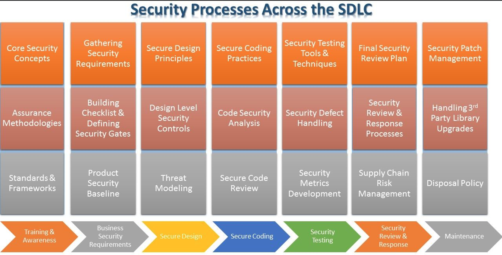
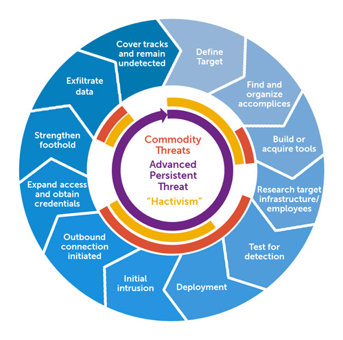
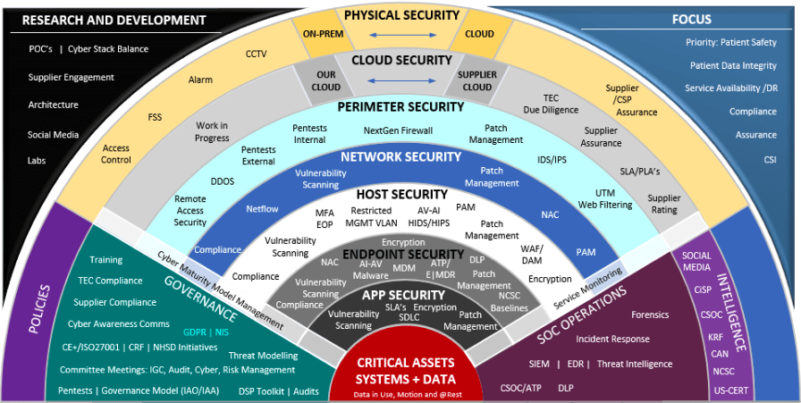

Application Security

Programming code security is also an essential part of information security. It is a vast and deep topic.
The information security specialist who specializes in architectural security can be the person who does not even know how to write programming code.
The information security specialist who specializes in architectural security can be the person who does not even know how to write programming code.
...Read More
Programming code security is a very different area of the focus. It has a range of major subtopics. Each of the topics can still be quite broad. Those subtopics of coding security are also deep enough to let someone claim a specialist about it.
To know the application security, it requires the knowledge of programming, secure coding principles, application architectural security, credential management, deployment security…etc.
One of the systematic ways of categorizing the subtopics would be catering those subtopics to the software development life cycle (SDLC). The principle becomes much more concrete after the systematic ways of classifying. Through this, the application in different development stages can comply with the application security principles. The method is commonly referred to as the Secure Software Development Life Cycle (SSDLC).
To know the application security, it requires the knowledge of programming, secure coding principles, application architectural security, credential management, deployment security…etc.
One of the systematic ways of categorizing the subtopics would be catering those subtopics to the software development life cycle (SDLC). The principle becomes much more concrete after the systematic ways of classifying. Through this, the application in different development stages can comply with the application security principles. The method is commonly referred to as the Secure Software Development Life Cycle (SSDLC).
Using SSDLC has many virtues. It facilitates communications between engineers. Without this, it would be quite abstract. It allows the newly discovered vulnerabilities to be integrated into the guidelines efficiently.
Since different application development of software would have various potential vulnerabilities surface, each task team could set up the customized principles and guidelines beforehand. For instance, website development is quite different from low-level driver writing. The requirement of the security level is quite different as well. People would not interact with the low-level driver directly. Yet, people would browse your website and input the data directly.
Reference
Picture By Hack2Secure - https://www.pinterest.com/pin/797207571509409038/
APT – Advanced Persistent Threat

How rampant the threats are in the cybersecurity world?
Cybersecurity crime is committed frequently from the personal level to the enterprise level and the country level. It is happening quite often with or without our notice.
...Read More
The motivation of perpetrator has evolved with time. Before, there are people just doing the grey hat or black hat hacking for fun and personal feeling of achievement. Nowadays, I believe there are covet hacking groups in almost half of the countries on earth. Each country would form this kind of covet group like recruiting army. Quite a few people are enlisted. One entity of the Internet is that there are no clear boundaries. This kind of group may carry out any missions anywhere.
For this reason, these groups have to be low-profile and be as transparent as possible. This group usually carry out extensive scale activities which would be divided into different tasks for a variety of smaller groups. The group would try their best to remain undetected for an extended period. There are even different stages for identifying the progress of the activity.
This is Advanced Persistent Threat, short for APT. APT is often even used to name the group with a number. Russian was suspected as the country that carried out threat activity targeting COVID-19 vaccine development.
For more information, you can take a look of the links below:
How they became the suspect?
Because of the pattern has a high similarity to the group APT29, which has long been identified as a Russian backed hacking group.
According to the CSE warning, "CSE assesses that APT29, also named “the Dukes” or “Cozy Bear” was responsible for this malicious activity, and almost certainly operates as part of Russian intelligence services. This assessment is supported by partners at Government Communications Headquarters’ National Cyber Security Centre, the National Security Agency, and the Department of Homeland Security’s Cybersecurity and Infrastructure Security Agency." (CSE, 2020)
Reference
CSE Statement on Threat Activity Targeting COVID-19 Vaccine Development – Thursday, July 16, 2020 | Communications Security Establishment. (2020, July 16). CSE. https://cse-cst.gc.ca/en/media/2020-07-16
Picture By Dell SecureWorks - https://www.secureworks.com/blog/advanced-persistent-threats-apt-a, CC BY-SA 3.0, https://commons.wikimedia.org/w/index.php?curid=26012880
DiD - Defense in Depth

After knowing DiD, you would have a general idea of how broad and deep that cybersecurity field has involved.
Have you ever wondered how the financial corporation cope with cybersecurity?
As the digitalization coming, the money is just numbers and digits to us now. Therefore, cybersecurity is critical and vital to financial enterprises and corporations. They need to keep their data safe and set up layers after layers for accessing. They have to take it seriously.
...Read More
When I worked as a salesperson, DiD was a common term used for introducing the cybersecurity solution. It provides a big picture of deployment both for vendors and buyers. During my days working for customers of financial corporations, they usually used it to examine the comprehensiveness of the implementation of cybersecurity solutions. It was also a strategy that they would refer to when they considered whether the security software products were the right fit. They can granularly translate those things into multiple real security products that were sold in the market. After that, they could find out what they were lack of and focused on finding a list of similar options that work as the right niche for it.
For a specific example, when customers need security products to protect their privilege credentials, which are accounts and passwords with high privilege, in enterprises, there are several choices. The choices may be CyberArk PAS (Privileged Access Security), BeyondTrust PAM (Privileged Access Management) or CA PAM (Privileged Access Manager). These choices would form a list for the specific niche in the granularly translated DiD.
For a specific example, when customers need security products to protect their privilege credentials, which are accounts and passwords with high privilege, in enterprises, there are several choices. The choices may be CyberArk PAS (Privileged Access Security), BeyondTrust PAM (Privileged Access Management) or CA PAM (Privileged Access Manager). These choices would form a list for the specific niche in the granularly translated DiD.
Blog Start!

Today is the first day I start to write my blog! Every information I provide here would be either cited from the external sources or my personal experience. I also would share some important news in the cybersecurity world from time to time. I hope you can enjoy your stay. You can take away anything you deem useful. That would be my honour.